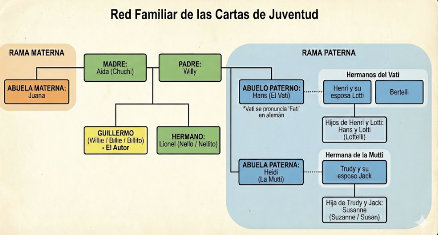

Contexto Familiar

La Familia del Autor

Postal 1: Swissair (Avión)
Dear family: ¡Esto es la mejor experiencia de mi vida! En Montevideo llovía pero qué aterrizo bien. En este momento terminamos de comer y estoy viendo la costa brasilera. Dentro de 15 minutos vamos en Campinas. Me parece que estoy viendo la desembocadura del Amazonas**. Todo muy bien.

Amazonas/Campinas: El autor menciona Campinas (cerca de San Pablo) y el Amazonas en la misma frase. Geográficamente están muy lejos.
11/2/72
Queridos mami, papi y Nelito:
El vuelo fue muy bueno, la única es que dan demasiado para comer. Europa está todo nublado, desde Lisboa hasta acá. En Zurich cuando el avión pasó las nubes para aterrizar pude ver un poco de Suiza (no hay nieve en los campos; en la montaña sí) el aeropuerto es increíble! En Copenhagen había muchísima niebla y aterrizamos con radar, desde la pista ni se veía el aeropuerto. Acá en Suecia nevó ayer y está todo blanco. El viaje de Arlanda hasta Estocolmo es lindísimo lo único que no tenía nieve era la ruta. Cuando llegué a Arlanda en un estante que dice "Information" había una nota de la amiga de Nick con la dirección del hotel. Me tomé el ómnibus y después un taxi que me costó 1600$ (un afano!). Acá en el hotel me dejó una carta diciendo que la llame por teléfono.

Estoy en pleno centro (más o menos la calle Florida de Estocolmo). es una pieza de 3m x 7m 1 cama 1 escritorio 1 ropero 1 lavatorio, tiene una ventana que da a la calle. Llegué a las 4hs me lavé y esperé hasta las cinco y media para llamar a la amiga de Nick. La llamé y es una señora macanuda y me invitó a almorzar mañana con ella.
A las seis (plena noche) bajé a comer comí bien pero me costó 3.500$ (otro afano) Mañana voy a ver si compro algo para comer acá porque si no me fondo en tres días. El hotel creo que cuesta 10 coronas (8000$) es barato (en comparación) y es limpísimo. Después de comer salí a dar una vuelta, la temperatura es de -2 C° pero yo no siento mucho frío. Los negocios son lindísimos, muy limpios y bien ordenados.
Acá la gente está toda loca ¡cruzan por la esquina y con el semáforo! Lo que sí es que si encuentro un tipo que tenga el pelo más corto que la altura de los hombros le pago una cena con vino, lomo y café porque estoy seguro que no hay uno solo.
Es increíble pero hay una cantidad de roñosos y melenudos que no salgo del asombro, y eso que estuve paseando 20 minutos nada más. Recién cuando caminaba pasó un tipo por la vereda de enfrente que tenía por lo menos 4 inyecciones de heroína, gritaba, corría, se paraba, puteaba a la gente en sueco; y tenía como máximo 20 años. Después por todos lados hay tipos con cara de drogados, probablemente porque es de noche, pero sin embargo hay muchísima gente en la calle.
Antes que salude otra cosa, te dicen gracias (Tak) por cualquier cosa, si a un tipo lo pateás te dice Tak, son muy amables.
Martes 15/2/72
Bueno, ya estoy en Gotemburgo.
El sábado fui a comer a un restaurant muy bueno con la amiga de Nick y un tipo de 25 años y después fuimos a dar una vuelta por el centro. A las 5 se fueron porque tenían otros compromisos, entonces fui al hotel y dormí un poco porque estaba muy cansado, después fui a comer y miré televisión en el bar los olimpíadas de Sapporo en color; ¡fabuloso! El domingo el tipo este me llevó a ver el WASA y el parque SKANSEN donde comí un smörgåsbord buenísimo. El lunes fui a Arlanda a tomar el avión que tuvo casi tres horas de demora y tuve que cambiar de avión tres veces; uno estaba roto y el otro tenía la goma pinchada.

Llegué a Torslanda a eso de la una y tomé el colectivo hasta el Park Avenue Hotel donde me encontré con Inga. A la noche fui con Anna y una amiga a un restaurante chino, después volvimos a casa y cayeron dos suecos y estuvimos charlando un rato.
Realmente estoy maravillado con las ciudades y la gente, no siento ninguna diferencia notable con Buenos Aires y me gusta estar más acá que allá. Lo único criticable son los borrachos en Estocolmo que hay para tirar al techo. Me dicen que probablemente vi muchos porque era un fin de semana y estaba enfrente de la terminal de subtes que es donde se encuentran generalmente.
El transporte es increíble, todo muy bien organizado. Esta mañana me fui solo a SKF en tranvía y llegué lo más bien. Ahí pregunté por la secretaria Holmqvist y en seguida me atendieron lo más bien.
A ella le di el paquete para Gruffman y lo fui a ver a Bo Overgaard que estaba muy contento y es macanudo. Cuando le dije lo de Suiza en seguida me dijo que vaya a pedir trabajo a SKF. Después fui con un señor que te conoce y creo que se llama Erlenson o algo así, que me llevó a ver algo de lo increíblemente grande que es la fábrica (bolillas, jaulas y montaje). La fábrica me asombró. Me olvidé de verlo a Cederwall pero uno de estos días voy a llamarlos a ver si puedo ir a la casa. Creo que el domingo o el lunes me voy porque Anna también se va y además las ciudades parecen sacadas de los libros de historia, con casas viejas y muy lindas.
No quiero abusar de la hospitalidad. Creo que en Suiza no voy a tener ningún problema con el trabajo. No creo que les dije que en el avión al lado mío se sentó un suizo piola que me dijo una que no hay problema e incluso me dio su tarjeta de Zurich para que lo llame. Creo que no voy a ir a Copenhague porque Jensen vive por la loma del quinoto.
Todavía no entiendo como, después de haber visto todo esto (y eso que vi poco), están viviendo en Buenos Aires. Tengo fe en el país, pero… no tanto.
Mis cartas háganlas circular por la flia, porque les voy a escribir postales a los demás parientes, o quizás una carta de vez en cuando.
Papi no te preocupes que la plata alcanza, hay que amarrocar un poco, pero… soy buen suizo en ese sentido. En Estocolmo bajé tres kilos pero pienso recuperarlos y con creces (peso 65 ahora !). Mami no te preocupes que tu Guillermito se cuida, me abrigo bien (aunque no hace frío +2 C° en Gotemburgo, no nieve) y tomo vitaminas todos los días.
Cariños a todo aquel que por mi pregunte por mi. Guillermo.
PD: Causé muy buena impresión en SKF y estoy seguro que los dejé bien. Nelo estudiá! a ver si cuando termina el año podés venir. ¿Me extrañás hermanito?
Estimada flia: Creo que la última carta que escribí fue la de la visita a la fábrica el martes. Hoy termino una semana agotadora en Gotemburgo. Les escribo un resumen de lo que hice porque es demasiado como para entrar en detalles. El miércoles a la mañana me buscó Johann Cederwall el hijo mayor y me llevó durante todo el día en auto a recorrer la ciudad y alrededores. Mölndal, Frölunda Torg, el otro lado del Gota älv, Gunnebo donde vimos un castillo, y hubo una casa bestial que nos llamó poderosamente la atención y despues nos enteramos que era de SKF. A la noche me fui a dormir porque no daba más.

El jueves dormí hasta tarde, después paseé por la ciudad a pie y a la noche fuimos a comer a la casa de Charlotte que vive con el novio y es un tipo muy simpático y con mucho sentido del humor, nos divertimos muchísimo. El viernes fui a comprar algunas cosas (un teleobjetivo y otras chiches para la máquina). A la tarde fuimos a comer a la casa de Anita que estuvo muy contenta con los jabones pero Suecia no le gusta mucho. Estoy comiendo pescado como loco. el sábado al mediodía fuimos a un restaurante en el puerto (creo que se llama Frederikhavn o algo) con Charlotte y el novio (Lars). A la tarde fui al Scandinavium a ver Jesus Christ Superstar con Bo, Johann y la novia, la entrada me la regaló Anita porque dijo que a ella no le gusta. A la noche fui con Lars y Charlotte a una discoteca para estudiantes de medicina y realmente la pasé muy bien (ya estoy seguro que cuando me case me caso con una sueca).
El domingo fui con Johann y la novia a recorrer la ciudad, almorcé en la casa de Anita y despues fuimos a la estación a despedir a Anna que volvía a Sigtuna. En la estación había arreglado encontrarme con Gunell y Mr. Gustafson, así que después de la partida fui a tomar un café con ellos Gunell estaba contentísima. Pronto se tiene que operar, creo que de una úlcera. Después seguí con Johann y la novia hasta KUNGSBACKA y volvimos por la costa.
A la noche fuimos de nuevo a la casa de Anita a cenar Anita, Gunell (escribile !!!) e Inga te mandan saludos, gracias, augurios de prosperidad y demás afines.
Junto con esta mando otra carta con mis detalles espero que lleguen juntas.
Lunes 21 - G. Bona - P. IV Göthemburs - Södra Vägen 41 - SWEDEN
Martes 22/2/72 Carta 4 (creo)
Queridos:
Ayer a las 6.20 llegué a Zürich. Trudy me buscó con un SAAB nuevo que tienen. El departamento es muy lindo. Me dieron una pieza (con una cama que es la delicia) y un baño grande como el de Nelo. Trudy es encantadora, y Jack un hombre de pocas pulgas pero muy buen tipo; me está ayudando muchísimo.
Este mañana fui con él al registro militar. Todo puede andar bien con un solo detalle; entre las pruebas de admisión hay una especie de test de comprensión en Francés, así que me dijeron que tengo que sí o - sí poder entender y hablar Francés. Las pruebas (físicas, médicas, etc) se realizan del 20 de Marzo al 15 de Abril, así que para ese tiempo tengo que aprender Francés. Cabe la posibilidad de que en caso de ser rechazado, me propongan el servicio hasta Febrero 73 o probablemente hasta Julio 73'. En este caso si me vuelvo a Bs As el gobierno me paga el viaje de regreso a Suiza.
Ahora bien; pensando optimistamente creo que puedo aprender suficiente Francés en 1 mes (o un poco más) como para pasarlo. Después de todo cuando me tomen la prueba yo les puedo explicar mi posición y decirles que antes de ingresar en el servicio voy a estar tres meses en la Suiza francesa con lo que creo voy a poder hablar suficiente Francés.
Pensando así lo llamé a Spichiger. A las 2hs me buscó en la estación de Zurich y me llevó a dar una vuelta y a tomar algo, Mientras hablamos del asunto. Después de intercambiar opiniones decidí esto: ir a la Suiza francesa (Neuchatel o Lausanne o Ginebra, etc) e instalarme ahí; asistir a algún colegio para aprender Francés o alguna especie de crash-course. En dos días él me va a averiguar precios y lugares y despos tendré que decidir por cual yo ya le expliqué que no quería gastar mucho. En cuanto al trabajo creo que hasta después de las pruebas no puedo decidir nada, y creo que es mejor estudiar intensivamente que trabajar y estudiar. Aparte, según Spichiger, en la S. Francesa hay muchos jóvenes en mi condición que vienen de la S. Alem. y quieren conseguir un trabajo para aprender mejor el francés, y por esto se hace un poco difícil. Aunque conseguir trabajo de post-boy o lavaplatos o pinche es fácil. Pero igual esto lo voy a decidir después de ver si me admiten o no.
Creo que la plata me puede alcanzar para 4 ó 5 meses olgadamente. Por ahora no toqué un solo franco de los 4000. Y cuando empiece a gastar en serio no (casa, colegio, etc) te voy a decir si necesito o no que me mandes.
Papi, yo creo que si no hubiera podido venir gratis, vos habrías hecho muy mal en no mandarme. Es algo que nunca te hubieras perdonado porque esto es increíble, una experiencia de marca mayor. Desde que nací es la cosa más feliz que me aconteció (¿que me contás?). Más adelante les escribo una carta (el viernes probablemente) de mis impresiones sobre Suiza, porque esto me parece más impactante (el servicio, etc, todo eso) como para dejarlo de lado.
Spichiger macanudísimo y muy agradecido y muy contento de verme.
G. Bona - Palmstrasse 26 - CH 8400 Winterthur - SWITZERLAND
Sábado 26/2/72
Queridos:
Esta carta la hago corta porque si no me cierra el correo. Acabo de recibir su carta, tardó 4 dias no más! Creo que de Suecia les mandé dos cartas más aparte de lo que recibieron, asi que ahí van a encontrar detalles de lo que me pareció Suecia.
Yo el otro día les escribí cuales eran los planes, pero mandé la carta por via aérea comun (no certificado ni expreso) y esta la voy a mandar expreso asi que probablemente la reciban antes que la otra.

Spichiger me consiguió una pensión en Lausanne, y voy a ir al Berlitz School ahí; también me va a llevar a Lausanne en auto. El martes a las 7:15 AM tomo el tren a Zurich donde me espera para llevarme.
Papi, mandale una carta de agradecimiento porque realmente se está rompiendo todo, hasta me da vergüenza todo lo que hace por mi. En Lausanne si todo va bien me quedo hasta el 2 o 3 de Abril, después me vengo a Winterthur para dar los examenes colimbicos (de la colimba).
Yo tengo la libreta militar. Tambien estoy haciendo tramites para sacar un certificado de origen (de Pfungen), creo que en 10 dias me lo dan.
Ayer estuve con un tipo de 20 años Suizo-Español que ya hizo el servicio y me dijo que entro seguro, mientras ande bien de salud y pueda hacer las pruebas.
A Maria no la pude llamar porque no conseguí el numero. Porque en la guia de Gotemburgo no esta Fui .al correo y me fije en las otras pero no lo pude encontrar
Recien me llegaron unos folletos que me mandó Spichiger el Berlitz con 20 lecciones... de lunes a viernes sale 315 francos por mes y despues me mando una lista de pensiones pero creo que no esta a la que yo voy a ir y todas estan de 600 a 700 francos, espero que me haya conseguido algo mas barato. Despues de que haya dado el examen me pondre a trabajar porque esto sale muy caro
Martes 29/2/72
Querida familia:
Esta mañana a las 8.30 tomé el tren a Zurich. Ahí me esperaba Mr. Spichiger. Nos subimos a su Mercedes Benz y me trajo hasta Lausanne. Pasamos y visitamos un poco de Solothurn, Berna y Neuchatel. Llegamos acá a las 5 P.M. Fuimos a la oficina de SKF y ahí conocí a Mr. Ringger que mañana me viene a buscar para llevarme al Berlitz School.
Uds se preguntarán ¿dónde estoy? Bueno, estoy en la Pensión "Foyer de Vidy" que está entre el cementerio y el lago. Son 5 bungalows largos con 90 piezas en c/u (dibujo). Fueron construidos para una exposición que hubo una vez y después los compró el estado. Son de madera y teja. La pieza mide unos 3.5m x 5m, tiene 1 cama (muy buena) 2 roperos 1 mesa y 2 sillas. En el bungalow hay inodoros, mingitorios, duchas y lavatorios. Todo es muy limpio y cómodo. Ah! También hay calefacción.
Lo único, es que no tengo toalla así que mañana voy a comprarme un toallón barato para bañarme. Es sin comida, pero acá hay un bungalow donde sirven desayuno y creo que cena. Las otras comidas las comeré por ahí. La pieza es barata, 9 francos por noche (es lo más barato de Lenzburg).
La macana de esto es que en 13 días me tengo que ir porque ya está reservado, así que voy a ver si lo convenzo al dueño o me busco otra cosa. Yo ya no me acuerdo ni lo que les escribo porque estoy escribiendo a mucha gente, así que Uds pregunten nomás si ven que falta algo. Por ahora sigan mandando las cartas a la casa de Trudy que ella me las va a mandar a donde esté.
Spichiger es macanudísimo, se rompió todo por mi. Sinceramente a veces me daba verguenza. Otro que me ayudó muchísimo fue Jack ¿quien dijo que era antipático? yo hablé mucho con él y nos divertimos mucho.
Interesting data:
+ El 2 o 3 de Abril vuelvo a Winterthur.
+ El curso en Berlitz cuesta 315 francos.
+ 2000 francos se los dejé a Trudy y 2000 me traje.
+ En total me quedan 4.200 francos (y ya pagué 7 días de alojamiento).
Voy a ver si en la próxima carta puedo escribirles de la visita que hice a la casa de Henri, o ya te los conté ? ¡que se yo! H. Spichiger manda muchos saludos (quiere que lo llame Hans).
G. Bona - Palmstrasse 26 / J. Andereg - CH 8400 Winterthur - SWITZERLAND
Lausanne 5 - 3 - 72
Querida familia:
Yo sigo muy bien y el resfrío ya se pasó. Acá en Lausanne estoy conociendo cada día más gente y todos muy macanudos. Francés entiendo todo cuando es hablado y cuando es escrito un poquito menos, y ya me voy dando maña para hablar. Los cursos en Berlitz son buenos y van bastante rápido.
Lo único que me tiene aterrado acá es el costo de la vida, esta mañana el colectivo aumentó de 80 cts a 1 franco, suerte que como en los restaurantes universitarios que son baratos y el hospedaje no es tan caro.

Ayer fue el día más feliz de mi vida. Fui a esquiar. Fuimos con un grupo bastante grande en auto hasta un lugar que esta a 100 km de aca y se llama Le Chemossaire. Cuando llegamos estaba nevando un poco. Alquilé unos esquies me abrigué bien y nos fuimos a la pista. Ahí me enseñaron como doblar y parar y en tres cuartos de hora ya me podía tirar de la pista chica sin caerme y doblando. Todos estaban asombrados. Paramos de esquiar para comer y yo a la tarde ya quería tirarme de la pista mediana pero empezó a nevar de tal manera que era imposible. Entonces nos fuimos a dar una vuelta por Gstaad y otros pueblitos. Todos increíblemente lindos.
Recién recibí una sola carta de Uds, pero creo que mañana voy a recibir otra. Todo muy lindo, la estoy pasando bien.
Postal 2: Skansen Lejonet (Postal de Suecia, escrita en Suiza)
Querida familia: ¡Estoy en Suiza! Mando una postal sueca (porque soy original). Esta tarde recibí su segunda carta, me ponen muy contento, aunque la verdad más contento de lo que estoy acá... difícil. Bueno, a lo concreto: El domingo me mudo al departamento donde vive mi amiga inglésa, porque de aca me rajan porque ahora vienen turistas (No se preocupen que yo duermo en una pieza y élla en otra). Me hice amigo de una señora sueca que está en clase de francés conmigo y tiene un amigo que dirige una cadena de hoteles así que seguro que me consigue trabajo para el mes que viene (ella tampoco puede creer que Suecia me guste tanto). El lunes mando carta "común", saludos y afines.
"Suecia me guste tanto": Esta parte es clave. A primera vista la caligrafía es confusa (parece decir "sale puto"), pero por el contexto y analizando los trazos comparados con otras letras, claramente dice "guste tanto".
Lausanne 15/3/71
Mon chere papa:
Avant tout, je te tiens que écrire que ma Français parlé est mieux que ma Française ecrit. Je peux se comprendre practiquement tout ce que je lis et maintenant j’ai commencé a comprendre quand ils parlent à la TV ou la cinema. Les cours à la Berlitz sont vites et je croix que será une bonne idée finir les cours complets; parce qu’on ait besoin de troix mois pour les finir, et ils sont commencés le 1er Fevrier et ils finiroit au fin du mois d’Avril. Et peut être que je peux travailler et étudier en meme temp. C’est facil d’entrer à travailler comme un garçon d’Hotel ou quelque chose similaire. J’ai connu une madame suéde dans le cours de française et elle m’ai dit qu’elle tient un ami qui est “el capo” d’un chain d’hotels et qui peut “conseguir” quelque travail.

A’ Lausanne c’est une difficulté pour louer une appartement, heureusement grâce à mon amie Anglaise j’ai trouvé une piéce chez une elle.
Un peu plus en Française et puis je change à l’español. Le dimanche dernière nous sommes allés (avec tout le group d’amis que j’ai) a Genéve pour voir la 19éme exposition internazional de la voiture, ¡mamma mia quels bagnoles!
Querida mama y hermanito degenerado (que todavía no me escribió ni j) Como ya conté arriba me mudé el Lunes 13 a un departamento que es bueno y barato, está en lo que sería Corrientes, Maipú en Buenos Aires, o sea una cuadra de la calle Floride! Es un departamento con tres piezas, baño y cocina, en una pieza vive Madame, que es una señora de unos 55 años muy buena y sumamente amable, en la otra vive mi amiga Ingles y en la otra estoy yo.
Cuando me mudé le dije a la señora que me iba a quedar hasta el 1° de Abril, porque al principio no le gustó la idea de tener hombre en la casa pero con paciencia y buena voluntad (y francés rebuscado, porque no habla otro idioma) la convencimos. Como acá tengo pila de amigos, y todos gente de lo mejor que podés pedir, voy a volver a trabajar acá porque es ridículo que, estando en un buen departamento, en una ciudad estupenda llena de estudiantes y con amigos asi, me vaya a otro lado.
Además uno de estos amigos (un Suizo-San Salvadoreño que tiene 20 años y está casado y estudia Business Adm.) estuvo el año pasado trabajando en un hotel y me puede conseguir trabajo, asi nomás, ganando de entrada 700 francos de sueldo y dice que por lo menos te haces otros 600 de propinas, 1300 francos en tot!! que serían más de 300.000 $ argentinos.
Claro que no es lo mismo porque acá todo te lo cobran y además un ojo de la cara. Para darles una idea hacen falta 700 francos por mes para dormir, comer y moverse viviendo justo, justo (700 fr. = 175.000 $). Por ahora con el dinero me va lo más bien, claro que tuve unos cuantos gastos extras, comprando cosas que realmente me hacen falta como ser una toalla, salida de baño, jabón, medias, vitaminas (eso si estoy tomando vitaminas porque la comida no es lo que se puede llamar bien balanceada (aunque muy buena) entonces más vale prevenir que curar) y otras cosas más. Pero igual cuando empiece a trabajar + el dinero que tengo me va a quedar de sobra.
Siguiendo con el tema (pienso volver a trabajar acá) le hablé esta tarde a la señora y le explique y me dijo que no es de la idea de tener hombres en el depto. pero como yo era tan...amable y gentil (se te cae la baba mami) me lo iba a reservar hasta que volviese (me iré el 2/4 y volveré el 7/4 + o -).
Acá cuando conseguís departamento o algo tenes que poco menos que hacer un sacrificio a los Dioses, porque es i-m-p-o-s-s-i-b-l-e. Tengo un amigo que estaba conmigo en Près de Vidy y el 21 de este mes se tiene que ir de ahi, hace un mes que está tratando de conseguir algo y no puede.

Se anotó en agencias pero si por ejemplo el va a ver un depto. y le gusta pero también va un suizo y le gusta se lo dan al suizo; asi él sea el primero en ver el departamento y se levante a las 5 de la mañana. Yo el mío lo conseguí porque hablé directamente con la dueña que si no ya estaba durmiendo en caños.
Tengo que dar gracias porque hasta ahora todo salió a pedir de boca y espero que siga así porque si por una de esas me rechazan en el servicio y me tengo que volver me muero! Con esto no quiero decir que no quiero volver más pero por lo menos quedarme 6 o 7 meses. Les cuento un poco de los amigos porque realmente son extraordinarios. Primero conocí a esta chica inglesa en el Berlitz que es archimuchísima y me ayudó mucho, ella me presentó a un colombiano de 24 años que estudia en Berlitz y que es el que vive en Près de Vidy (que ahora tiene el problema de alojamiento).
Despues me presentó a una pareja de Colombianos que también estudian acá becados por el gob. Suizo, ella tiene 27 y el 28 y te aseguro que ella es igual a vos en buenisima, simpática y cuando habla con un acento colombiano es encantadora el otro día me preparó un pastel de papas igualito al que hacés, y el oso un pan de dios parece Mr Eugbäck.
[Ilegible] por ellos conocí a esta pareja de Santalvadoreños que también son gente extraordinaria. Y después conocí a un Suizo-Colombiano que es huérfano y esta estudiando Seguros también becado por el gob. Suizo. Estos son los amigos mis directos después conozco Andorranos, Uruguayos, Bolivianos, Franceses, Norteamericanos, Españoles, Malgachenses, etc. Como ves mami estoy como en casa lo unico que me falta es algun gritito de vez en cuando para que ordene las cosas y alguna buena comida de Lidia. Que tal Lidia como está? Siempre gritándole a Nelo? Me parece bien. De vez en cuando hágale algunos panqueques para que los coma por mí. Después cuando tenga algun ratito libre cuénteme como le gusto el carnaval de la Republica Correntina.
Mi vida diaria ahora consiste en levantarme a las 7 ½ o 8 (depende si me baño o no, porque acá es todo un trámite bañarse, hay que llenar toda la bañadera porque no hay ducha) despues tomo el desayuno, que me lo preparo en mi pieza, despues voy a clases (9 h) a las 10.15 salimos a tomar algo después entro hasta las 12 hs. Despues tomamos el omnibus y vamos a comer al comedor universitario donde está todo el mundo. Y a la tarde hay variantes: leo en francés algunos libros o el diario, leo en inglés, salgo de compras, vamos a pasear, hago los deberes de frances, escribo, seco fotos, duermo una siestita, en fin siempre hay algo que hacer. Bueno espero que no se quejen después de semejante carta.
[Texto escrito en el margen izquierdo de la hoja 4]: Recibí la carta en francés.
"Pila de amigos": Mucha cantidad de amigos.
"Se te cae la baba": Estar muy orgulloso o encantado con alguien.
"Archimuchísima": Un superlativo inventado, coloquial.
"Todo salió a pedir de boca": (Pág 3): Todo salió perfectamente.
"Durmiendo en caños": (Pág 3): Expresión figurativa para decir durmiendo en la calle o bajo un puente.
En la página 1, la sección en francés contiene errores gramaticales ("ma Français" en lugar de "mon Français", "je te tiens que écrire", etc.), tal como el propio autor admite que su francés escrito no es perfecto. Lo he transcrito con los errores originales.
"Bagnoles" (Pág 1) es argot francés para "coches" o "autos".
"Malgachenses" (Pág 4): Parece ser un gentilicio mezclado por el autor para referirse a los habitantes de Madagascar (malgaches).
En la página 3 al final, la palabra antes de "por ellos" es difícil de leer con certeza, parece decir "Rezá" o "Alta", pero dada la dificultad la marqué como ilegible.
Lausanne 27/3/72 [Lausana, Suiza]
Mes chères parents et frère: [Francés: Mis queridos padres y hermano]
Recibí dos cartas de México y una postal que más que postal parecía un afiche. Enteréme de la situación en la Argentina (Asunto Salustro) [1] y realmente tengo miedo por Uds. más ahora que me decís que la huelga fue de 3 semanas y que la echaron a 34 obreros. ¡Por lo que más quieran cuídense! Y esto va en serio pa [2] que realmente me dio miedo y cada dos por tres tengo pesadillas.

Efectivamente el Lunes 3 me voy a Winterthur [3] para el 4 dar el exámen, creo que todo va a ir bien, parece que no son muchos los que rechazan y además creo que Spichiger tiene una cuña (porque aunque te parece mentira la palanca acá en Suiza corre, y de lo lindo!) [4] porque el asunto principal es ver si me lo dejan hacer en Julio, porque esta revisión es para los que entran en Feb '73. Si me llegan a decir que lo tengo que hacer en Febrero no se lo que hago.
Porque sinceramente no tengo muchas ganas de volver, además acá es muy fácil conseguir una beca del gobierno suizo para estudiar, la carrera de Administración de Empresas que dictan acá en Lausanne dura 3 años, y en 7 u 8 meses se puede aprender bien Francés o lo suficiente como para asistir a los cursos porque yo estuve hablando con algunos amigos que estuvieron en las mismas condiciones que yo (de lengua) y les va lo más bien. De todas maneras esta semana me pongo en campaña para averiguar bien todo este asunto para poder estar bien seguro de lo que hago.
En caso que la pueda hacer en Julio no hay problema porque me vengo acá y sigo trabajando. Bueno en fin no se asusten mucho por lo que escribo en ésta carta (en especial mami) porque son sólo planes y las cosas pueden cambiar mucho. De todas maneras la situación en la Argentina no es nada buena supongo?
Me alegro que la pasen bien en México y saludos a Isaak. No se hagan problemas por mi porque los amigos que tengo son gente excepcional y cuando tenés dificultades te pueden ayudar tanto como un hermano. Hablando de hermano supongo que mami ahora respirará tranquila ya que Nello [5] está en 5to, porque es el único año que no se puede repetir. A ver si se decide a seguir algo o piénsa un poco las cosas porque éste es el último año que se la pasa de arriba [6].
Miren no tengo la menor idea de cuantas cartas les escribí y que es lo que les escribo asi que si repito cosas no se asusten que no perdí la memoria. Pero es que me paso escribiendo a todo el mundo. Pero de ahora en adelante solo escribo a los que me escriben porque todo el mundo tiene mi dirección asi que no hay excusa.
El fin de semana anterior (20, 21/3) fui a Interlaken pero creo que esto se los conté, bueno igual es muy lindo. Este fin de semana no hice mucho, solo vida hogareña, cociné para unos amigos en la casa de esta pareja de Colombianos y quedaron maravillados con los huevos revueltos con tomates y jamón, y la salsa que me mandé [7] para el arroz (gracias a lo que aprendí de mami) y para el fin de semana que viene les prometí arroz a la cubana. Esto es porque los fines de semana el comedor universitario cierra y sale muy caro ir a un restaurante, entonces nos juntamos algunos en algún departamento y cocinamos.
Acá hago más o menos vida de casado, pero me está gustando cada vez menos, a veces la inglesa se mete en el baño y está como dos horas maquillándose y arreglándose, y si hay una cosa sagrada para mi es el baño asi que a veces me enchincho [8]. La señora del departamento se fue a Col de Mosses [9] por dos semanas asi que podemos usar la cocina, ver televisión, etc.
Bueno espero que hayan pasado una feliz Pascua y mandenle muchos saludos a Lidia.
[1] Asunto Salustro: Se refiere al secuestro del empresario Oberdan Sallustro por el ERP (Ejército Revolucionario del Pueblo) en Argentina, ocurrido el 21 de marzo de 1972 (días antes de esta carta). Fue un hecho de enorme conmoción política.
[2] Pa: Coloquialismo para "para".
[3] Winterthur: Una ciudad en el cantón de Zúrich, Suiza.
[4] Cuña / Palanca: Términos muy coloquiales (especialmente en Argentina/Uruguay) para referirse a tener influencias, contactos o "acomodo" para conseguir algo.
[5] Nello: Parece ser el apodo del hermano (probablemente Alejandro o similar). La caligrafía es un poco ambigua pero parece decir "Alelo".
[6] De arriba: Expresión coloquial que significa vivir gratis, sin esfuerzo o mantenido por otros.
[7] Me mandé: Coloquialismo argentino que en este contexto significa "preparé" o "hice" (generalmente con orgullo o improvisación).
[8] Enchincho: Del verbo "enchisparse" o "enchiripa", pero más comúnmente "enchincharse" en el Río de la Plata, significa ponerse de mal humor, fastidiarse o irritarse.
[9] Col de Mosses: Probablemente se refiere al Col des Mosses, un paso de montaña en los Alpes suizos, cercano a Lausana, conocido por ser una estación de esquí.
Laussanne 1 de Abril (año en curso)
Dear momma, poppa and brothah. [1]
Ahora que estoy un poco más ubicado, (creo que ayer escribí la otra carta, pero Uds. se merecen esto y mucho más) voy a ver si les cuento algo de todo lo que tengo que contar. El miércoles 23 fui a Pfungen[2] por primera vez, a Vati y a Mami les escribí sobre este asunto asique para ahorrar tiempo pregúnteles.

El jueves fui a dar una vueltita por Zurich con Trudy. Cuando caminas por el Banhoffstrasse [3] no sabés si estás en Bs As o acá, es muy parecido. El viernes fui a Schaffhausen con Trudy, es muy lindo, fuimos a un castillo y despues comimos una pizza por ahí. El sábado Trudy y Jack se fueron a S. Gall [4] entonces me fui a Pfungen y estuve desde las 3hs hasta las 10hs en la casa de Henri. El domingo Susan nos invitó a almorzar, despues de comer dimos una vueltita por la campiña (caminando como buenos suizos). El lunes no hice un corno [5] y el martes me vine para acá.
En casa de Henri me divertí muchísimo, estaban también Hans y Lotti. (Como ya expliqué en la carta a Vati). Henri es una copia con el mismo molde de Vati, los mismos chistes, el mismo humor hasta tienen los mismos movimientos, estoy seguro de que si Henri hablara castellano diría: “Mire Billito" [6]. Hans es macanudo, y estuve hablando bastante con él. y Lotti es adorable, y aunque con la madre (Lotti grande) no pude hablar mucho igual me gustó y se rompía toda [7]. En resumen: parientes que hay que conocer.
Después Susan no es la simpatía personificada, pero conmigo se portó lo más bien y comimos una rica comida y me atendio de lo mejor. No se si será porque está casada o qué pero ni miras de lo que me pintaron. El esposo es agradable. [PD: Me pesqué un resfrío, pero va en mi mejoría, para el tiempo que llegue la carta ya habré pasado. PD: Papi vos que andás con guita mandame todas las cartas x expreso asi llegan antes. [8]
Todos los lugares que visité me gustaron mucho en especial los alrededores de Berna con las granjas típicas, que realmente son casas que yo pensaba que solo se veían en folletos de turismo. ¡En fin!
Ya les conté + o - todo lo que hizo Spichiger por mi y encima ahora cuando vuelva a Winterthur [9] quiere llevarme a Luzern y Konstanz, yo creo que en vez de regalarle un jabón habría que haberle dado montura con caballo y todo. Lo único que encuentro a disgusto en la segunda patria son los alemanes. Ya sé, Papi [10], que no se puede generalizar y que hay de todo (y aparte recién hace 2 días que estoy) pero no me podes negar que la mayoría son bastante secos y no extremadamente cordiales. Aparte en Suiza también estuve 10 dias nomás y el contraste es tremendo. Aunque hoy estuve en unos cuantos negocios acá en Lausanne y son mucho mas simpáticos que los suizos alemanes.
Esta mañana me vino a buscar M. Ringger y me llevó a Berlitz me inscribí y comencé el curso. Ya me hice algunos amigos que me informaron de las "tangas" estudiantiles [11]. Ah! nunca vi tantos sudamericanos juntos como acá en Laussane. Pero, oh caracoles! [12] no hay ningún argentino, y todo el mundo te dice lo mismo que argentinos no hay por ningún lado. Soy original.
Me hice amigo de una chica inglesa que me ayudó a hacer las compras y me llevó a lugares donde sirven comida para estudiantes y podes morfar y deglutir [13] como un chancho por 4 francos (que acá es baratísimo). Yo calculo que en comidas gastaré 10 o 12 francos por día y, más el alojamiento 9 francos son 19 - 20 francos/dia lo que hacen un total de 600 francos/mes, que a niveles argentinos es un afano [14] pero que acá es lo más barato que podés conseguir. Dame tu sabia opinión paternal al respecto.
Podría seguir escribiendo pero no quiero crearles un vicio (no te podés quejar mami). Antes de despedirme por 4 o cuatro días les puedo adelantar que acá estoy contentísimo, parece una ciudad donde no hay gente mayor (por no decir jovatos) [15] está lleno de estudiantes por cualquier lado. Sin más me despido de la presente.
[1] Saludo en inglés: Escribe de forma fonética y juguetona ("brothah" en lugar de brother).
[2] Pfungen: Probablemente cerca de Zúrich. Donde nació el abuelo del escritor.
[3] Banhoffstrasse: Se refiere a la Bahnhofstrasse de Zúrich, una de las avenidas comerciales más caras y famosas del mundo.
[4] S. Gall: Se refiere a la ciudad de San Galo (St. Gallen).
[5] No hice un corno: Expresión muy coloquial argentina que significa "no hice nada".
[6] Mire Billito: "Billito" parece ser el apodo familiar de Guillermo (diminutivo de Bill).
[7] Se rompía todo: Frase coloquial algo ambigua en este contexto, probablemente signifique que la señora se desvivía por atenderlo o se reía mucho ("romperse de risa").
[8] Guita: Dinero (lunfardo rioplatense). Pide que le envíen cartas por correo rápido ("expreso").
[9] Winter.: Abreviatura de Winterthur.
[10] Pepi: Parece ser un apodo cariñoso para dirigirse a su padre ("Papi" modificado).
[11] Tongas: Trucos, atajos o arreglos para conseguir cosas más baratas o fáciles.
[12] Oh caracoles!: Exclamación cómica (popularizada por la traducción de los cómics de Batman en la época).
[13] Morfar y deglutir: "Morfar" es lunfardo para comer. "Deglutir" es tragar. Enfatiza que comió mucho y con avidez.
[14] Afano: Robo (lunfardo). Aquí se usa para decir que el precio es excesivamente caro comparado con Argentina.
[15] Jovatos: Término lunfardo algo despectivo o coloquial para referirse a personas ancianas o viejas.
Winterthur 4/4/72
Querida Familia:
Les escribo esta carta rápido, porque no quiero que me cierren el correo. Esta mañana a las 7.30 fui al centro commando donde me harían la revisación. Nos hicieron formar a todos (eramos unos 30) y un general empezó a dar indicaciones en alemán, habló durante 15 minutos, cuando terminó llamaron mi nombre (yo era el primero en la lista) y yo dije en francés, que no sabía que hacer, ahí mismo todo el mundo se entró a reventar de risa porque parece que antes había dicho como 4 veces lo que había que hacer, para que nadie le preguntara de nuevo.

Bueno, en fin, hice las pruebas físicas, salto, carrera, trepar y tirar una granada, y las hice muy bien porque por eso saqué una "mención de honor". Después me sacaron sangre, revisaron la vista, los oídos, peso, altura, pecho y bolas. Y me declararon "apt pour service". Gracias a Dios un general ahí hablaba como 7 idiomas entonces le pude explicar mis penas y preocupaciones. Me dijeron que me iban a mandar con un pelotón francés y probablemente a Lausanne. Le llamó la atención que me haya venido de la Argentina para hacer el servicio y me dió las gracias y dijo que lo apreciaban mucho. Después tuve que hablar con otro para explicarle que quería entrar en Julio y me dijo (no hablaba muy bien francés pero el bueno de Jack me escribió una carta en alemán explicando todo) que en 4 días me iban a mandar una petición que yo debía llenar y mandar de vuelta. Ah! además me pusieron en "Infanterie Mitrailleur" que seguro voy a tener que laburar como negro.
Parece que todo está bastante claro, me aceptaron y voy a la parte Francesa; lo único es ver si entro en Julio o no, pero me dijeron que hay bastante posibilidad que si.
Por ahora no se que hacer, espero que me contesten pronto el asunto de Julio; por lo menos hasta el lunes me quedo aquí porque este fin de semana Spichiger (creo que ya se los dije) me invitó a ir a Lugano. Y si no me pueden contestar pronto me vuelvo a Lausanne hasta nuevas noticias.
Carta de Uds no recibí más que las 2 de Mexico, la postal + 3 cartas de "Nellita". Junto con esta carta va una para él y otra para los Engbeck . Bueno, yo sigo lo más bien, acá con Trudy me divierto mucho. Llegué el viernes por la mañana, me trajo un amigo en auto. Ayer vinieron Susy y Lucas a almorzar, porque no se si saben el lunes es feriado acá.
Ahora voy a ver si unos de estos días la veo a Bertelli, creo que voy a ir con Henri a Zurich y la vamos a encontrar ahí. También por este bendito asunto de la colimba me perdí de ir a Austria con un grupo de amigos, pero qué “que le vacha che”.
Bueno, acá me despido, ah! y escriban rápido che, porque a vos mami …….también te gusta que te escriban. Espero la que hayan pasado lindo y ahora que volvieron a la Argentina Terrorista , se me cuiden eh!
PD: A ver si le dicen a la abuela que me escriba aunque sea una pavada.
Lausanne 13/4/72
Querido Papa:
Hier matin j'ai reçu ton lettre. [Ayer a la mañana recibí tu carta]. Mais, ne les envovie plus a l'Ecole Berlitz, parce que j'ai fini l'Ecole le 30 du mois dernier, et n’en vais plus. Dans l'enveloppe tu trouveras la nouvelle adresse. Je suis arrivé ici le mardi midi par train.Hier je suis allé au bureau de police pour faire le dépot de certificat d'origine, et maintenant ils doivent m'envoyer un papier que me servira pour trouver un travail. Pas de problème pour trouver travail!

Le Vendredi] dernier je suis allé a Zurich a la maison de M. Spichiger. J'ai passé un très jolie week-end. Le samedi nous sommes allés (avec M. Sp. et sa fille) au musée d'art moderne au matin, et a l'après midi je suis allé avec ça fille au cinèma. Le dimanche nous avons monté le mont Rigi qui est entre le lac de Zug et le lac de Lucerne, après nous avons allés a Brunnen (près du lac de Zug) pour manger. Le lundi je suis parti a Winterthour. M. Spichiger sends you regards.
Bueno, ya me está doliendo la cabeza de escribir francés, además me sale para el lado de los tomates, espero que hayas entendido algo. También me enteré lo de Sallustro y el general Sanchez, y es una animalada! Acá hasta los diarios de extrema izquierda y tendencia trotskista dicen que es una barbaridad lo que el E.R.P. está haciendo.
Sobre el servicio militar ya te mandé una carta que seguro recibiste, pero todavía no me mandaron el formulario para solicitar el ingreso en Julio. Si no lo recibo antes de el viernes voy a llamarlo a Mr Spichiger para que mueva palancas . No te preocupes porque no lo molesto, al contrario está contentísimo conmigo, porque el hijo es uno de estos despistados que hace dos años largó el colegio y ahora va a continuarlo; además se la pasa leyendo libros que recibe de las embajadas de China y Cuba; no dice "norteamericano" sino "imperialistas"; piensa que Cuba es el paraíso y que debe ser lindísimo lo que están haciendo en la Argentina. Mirá como será que el viejo le ofreció un pasaje gratis con estadía y todo a Cuba para que vea lo que es (pero, como es lógico, lo rechazó). Me dió lástima por Spichiger porque lo tiene preocupado y triste. Ya ni puede hablar con el hijo, dicen tres palabras y ya se pelean. No me acuerdo si les escribí, pero por las dudas lo pongo igual, sobre Bertelli.
El miércoles de la semana pasada fui con Henri y Lotti a Zurich y nos encontramos con Bertelli en un bar de la Bahnhofstrasse. Bueno no hace falta que te explique como me recibió y saludó, estaba muy contento con los jabones y no podía entender como un padre tan joven tiene un hijo tan grande. Después caminamos un poco por Zurich, me agarró el brazo y después de un ratito me pregunto si no me molestaba que me vieran del brazo con una vieja. Antes de despedirse me quería convidar con algo más entonces fuimos a comer "Schübligs" o algo por el estilo. Y a la noche fui a comer a la casa de Henri, estaba Cornelius también y después vino su novia, la pase muy lindo.
15/7/
Bueno me demoré un poco porque tuve que hacer. Ayer fuimos a esquiar (despues les cuento). Hoy me lo encontré a Jorge Arcich en el restaurant de casualidad, no lo podía creer. Te manda saludos.
Contexto Político Argentino (Carta 3): Guillermo menciona con mucha indignación "lo de Sallustro y el general Sanchez". Se refiere a dos eventos de altísimo impacto en Argentina ocurridos en abril de 1972: Oberdan Sallustro: Director general de Fiat Concord en Argentina, fue secuestrado por el ERP (Ejército Revolucionario del Pueblo) y ejecutado el 10 de abril de 1972. Juan Carlos Sánchez: General de División asesinado también el 10 de abril de 1972, en una acción conjunta del ERP y las FAR.
La frase "Argentina 'Terrorist’” al final de la carta es un juego de palabras con "Terrorist" y refleja el clima de violencia política de la época.
Servicio Militar Suizo: Se nota la preocupación por entrar en julio ("el asunto de Julio"). La "Infanterie Mitrailleur" (Infantería de Ametralladoras) a la que fue asignado era una posición físicamente exigente, lo cual coincide con su comentario "voy a tener que laburar como negro".
Idioma: Es interesante cómo intercala francés y español ("Spanglish" o "Fragnol"). Frases como "hier matin j'ai reçu ton lettre" (ayer a la mañana recibí tu carta) muestran su inmersión en el idioma, aunque él mismo admite jocosamente que le sale "para el lado de los tomates".
Schübligs: Mencionado en la carta 2, el Schüblig es una salchicha ahumada tradicional suiza, muy popular en la parte alemana (Zurich/Winterthur).
Que vachache: Al final de la carta 3, escribe “que vachache “. Es una fonetización humorística típica resignación argentina ante un inconveniente.
Lausanne 21/4/72 Viernes
Momma & Pappa:
Esta es una carta corta que va al grano.
Hoy recibí una carta de la Universidad de Lausanne, que es la que les mando, donde me piden el certificado de ingreso a la UCA. Yo les pido un favor, que vayan a la UCA (queda en Reconquista y Bme. Mitre, o la sede de ingresos que está en Juncal o Junín y Riobamba, de todas maneras en el cajón de mi escritorio en el rubro Facultad van a encontrar la dirección exacta) y me piden un certificado, pero bien hecho. Les pueden mostrar la carta de la Uni Lausanne y ya van a saber que hacer.
Si van a Riobamba pueden hablar con el Dr Creviotto [1] que es muy buena persona y es el director de los cursos de ingreso. Si en vez de eso no lo pueden conseguir no se desesperen que no es fundamental, pero me podría ahorrar el exámen de ingreso acá. Porque acá quieren saber que materias y programas tuve que cursar (esto es importante yrexpliquenlo en la UCA). Esta es la dirección de Graciela por cualquier cosa o problema vayan a su casa (G. Colombo - 11 de Setiembre 3066 - Victoria).
Después otra noticia. Conseguí un trabajito. Soy profesor de inglés en un laboratorio de idiomas (Audax) [2]. El único problema es que solo trabajo + o - 2 horas por día (de 16.30 a 18+-) para me pagen 300 francos al mes, no declaro impuestos asi que son netos. Y ahora voy a tratar de conseguir algo a la mañana como de 8 a 12 + ó -. El lunes comienzo a trabajar de profe. asi que después les cuento.
Anteayer lo llame a Spichiger [3] por el asunto del servicio y me dijo que en seguida iba a llamar al Kreiskommando [4] para que me manden el formulario que todavía no llegó (Papi mandale una carta, agradeciéndole por todo, porque realmente es un flor de tipo).
Cédula de Identidad 10.049.841 [5]. El resto anda lo mas bien, salud y dinero en abundancia.
PD: Pronto va una carta para el bueno de Nello.
Para un tercero que lea el libro, estos puntos ayudan a situar la carta en su contexto histórico y geográfico:
[1] Dr. Creviotto: Se refiere a una autoridad académica de la UCA (Universidad Católica Argentina) en 1972. Guillermo está intentando validar sus estudios previos en Argentina para facilitar su ingreso a la universidad en Suiza sin tener que rendir todos los exámenes de nivelación.
Nota geográfica: Menciona las sedes históricas de la UCA en Buenos Aires (calle Reconquista y Bartolomé Mitre, y la zona de Juncal/Riobamba).
[2] Laboratorio de Idiomas (Audax): Guillermo consigue su primer empleo en Suiza enseñando inglés.
Valor del dinero: Menciona un sueldo de "300 francos". En 1972, 300 francos suizos era una suma modesta (dinero de bolsillo para un estudiante), pero significativa considerando que trabajaba solo 2 horas diarias. El hecho de que aclare "no declaro impuestos así que son netos" muestra la informalidad común en trabajos estudiantiles de la época.
[3] Spichiger: Aparentemente un contacto militar o administrativo suizo de confianza de la familia. Guillermo le pide a su padre ("Papi") que le agradezca formalmente, describiéndolo con la expresión argentina "es un flor de tipo" (es una excelente persona/muy servicial).
[4] Kreiskommando: Término alemán que se refiere al Comando de Distrito Militar en Suiza.
Contexto clave: Esto indica que Guillermo, al residir en Suiza (y probablemente tener la doble ciudadanía), estaba sujeto a obligaciones militares o debía tramitar exenciones/prórrogas del servicio militar obligatorio suizo. Estaba esperando un formulario burocrático vital para regularizar su situación.
[5] Cédula de Identidad 10.049.841: Incluye su número de documento argentino al final, probablemente para que sus padres lo tengan a mano para realizar el trámite en la UCA mencionado en el primer párrafo. El número (10 millones) corresponde a hombres nacidos en Argentina aproximadamente entre 1948 y 1952.
[6] G. Colombo - Victoria: La dirección "11 de Setiembre 3066, Victoria" se refiere a la localidad de Victoria, en el partido de San Fernando, Zona Norte del Gran Buenos Aires. Graciela probablemente sea un nexo familiar o una amiga encargada de ayudar con los papeles.
Lausanne 22/4/72
Peace brother... peace:
Ayer escribí una carta a mami y papi pidiéndoles algo de la facultad, y al final de la misma me referí a un nuevo trabajo que he encontrado. Soy profesor de ingles en un laboratorio de idiomas. Cada alumno tiene un grabador y unos auriculares con micrófono, entonces prenden el grabador que va diciendo "This is a car" entonces ellos tienen que repetir. Yo estoy al frente de la clase y tengo unos auriculares con micrófono también, pero ademas tengo una consola con un montón de botones. Entonces aprieto un botón y puedo escuchar al que se me de la gana y si está pronunciando mal aprieto otro botón que para su grabador y lo corrijo. Ayer a la noche fui a practicar y es bastante fácil. Bueno una boludez.
Che! escuchame ahora que tenés grabador a ver si se graban un cassette con papi y mami y todo el que se le de la gana y me lo mandan para acá (que papi averigüe si se puede mandar por correo (que burro que soy).
Dontito, boludito, esta foto es cuando fui para el servicio militar a hacer la revisación, las fotos son una cagada pero la intención es lo que vale.
En la próxima carta voy a ver si te mando algun puchito Estudiaaaa! y no la hagás renegar a tu madre
Esta carta es mucho más informal que la de los padres y muestra la dinámica entre hermanos jóvenes en los 70.
[1] "Peace brother... peace": El saludo en inglés refleja la cultura juvenil de la época (1972), influenciada por el movimiento hippie y el pacifismo post-Woodstock.
[2] El Laboratorio de Idiomas: La descripción que hace Guillermo es una "cápsula del tiempo" tecnológica. Describe el sistema clásico de enseñanza de idiomas de los 70/80 con consolas analógicas, cintas magnéticas y auriculares grandes. Nota de color: El término "una boludez" (muy fácil / tontería) es jerga argentina clásica, indicando confianza a su hermano sobre la dificultad del trabajo.
[3] El Cassette por correo: En una época sin WhatsApp ni llamadas baratas, enviarse cassettes grabados con las voces de la familia ("cintas de voz") era muy común entre emigrantes. El error: Guillermo escribe "mandar por teléfono", lo tacha y pone "correo", y se auto-critica entre paréntesis ("que burro que soy").
[4] "Dontito" y la tachadura: Se dirige a su hermano como "Dontito”, en realidad es “Tontito” con la T mal pronunciada. Hay una palabra tachada justo después que parece decir "boludito". Es un detalle entrañable de confianza entre hermanos.
[5] Servicio Militar y Fotos: Menciona fotos de la "revisación" del servicio militar. Esto conecta directamente con la carta anterior donde hablaba del "Kreiskommando" y "Spichiger".
[6] El "Limerick" (Poema en inglés): Guillermo transcribe un Limerick (poema humorístico de cinco líneas con rima AABBA), típico del humor británico, a menudo picaresco o subido de tono.
[7] "No la hagás renegar a tu madre": El consejo clásico de hermano mayor a hermano menor que se queda en casa.